السلسلة 132
السيارة (صنف B) · 40 سؤال بالصوت. حاول تجاوب بوحدك، من بعد شوف الجواب.
السؤال 1
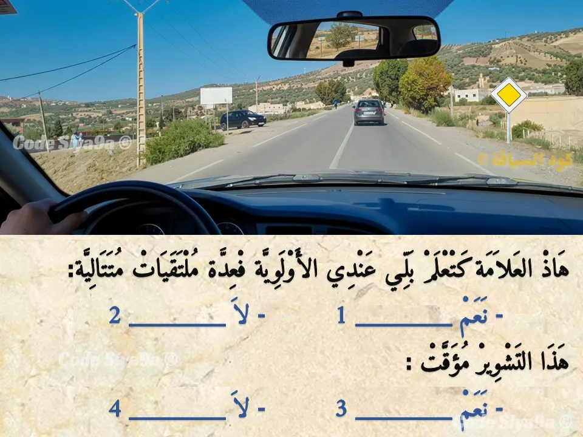
بيّن الجواب
الجواب الصحيح: 1 و 4
كتعلن هذه العلامه على طريق دار الطابع اولوي الى غايه وجود علامه نهايه الطبع الاولوي للطريق. وهذا كيعني انني في الطريق ذات اسبقيه المرور.
من الواجب علي نرد البال وننقص من السرعه ونحترم مسافه الامان عند ملتقى الطرق المقبل.
هذا تشوير دائم.
السؤال 2
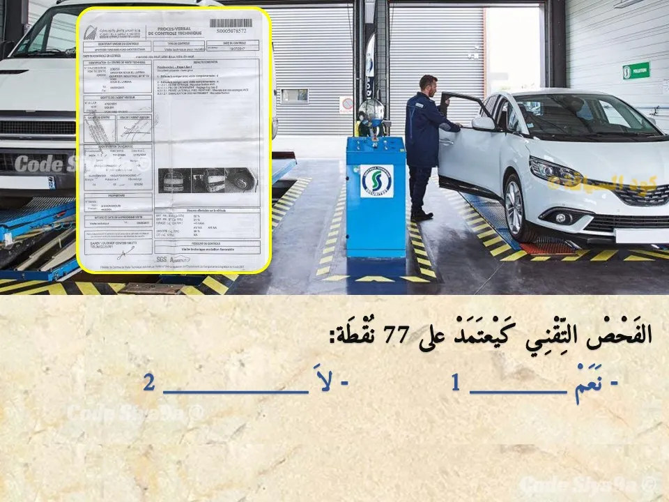
بيّن الجواب
الجواب الصحيح: 1
الفحص التقني يعتمد على 77 نقطه هاد 77 نقطه كاتكون متوزعه على 10 ديال الوظائف. كل وظيفه كي تم تنقيط عليها بسبعه ديال النقاط وفي المجموع كانحصلوا على 77 نقطه
السؤال 3
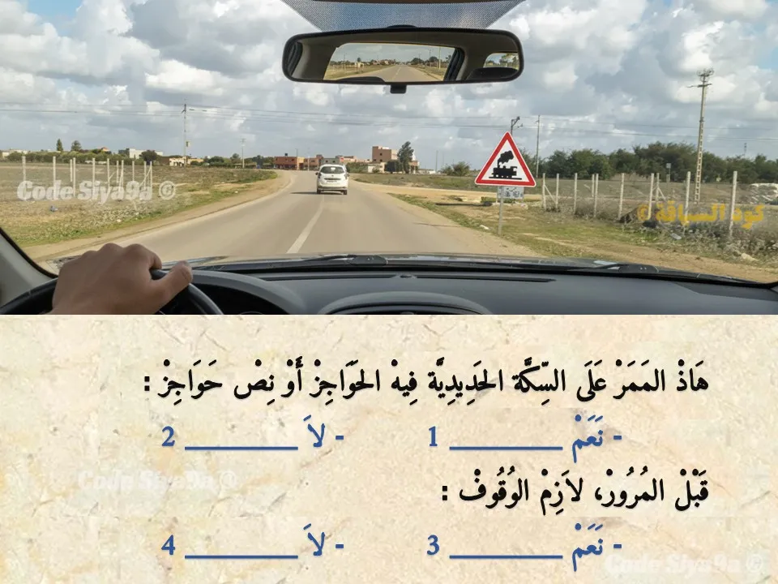
بيّن الجواب
الجواب الصحيح: 2 و 3
كتعلن هذه العلامه على خاطر الاقتراب من السكه ديال القطار بدون حاجز ونصف حاجز.
من الواجب اللي ينقص من السرعه وفاش نوصل للتقاطع نوقف و نتاكد من عدم اقتراب اي قطار وعاد ندوز.
السؤال 4
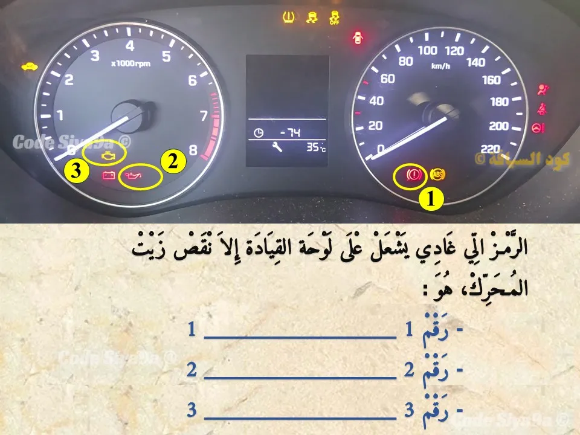
بيّن الجواب
الجواب الصحيح: 2
الرمز اللي غادي يشعل على لوحه القياده الى نقص زيت المحرك هو رقم 2.
السؤال 5
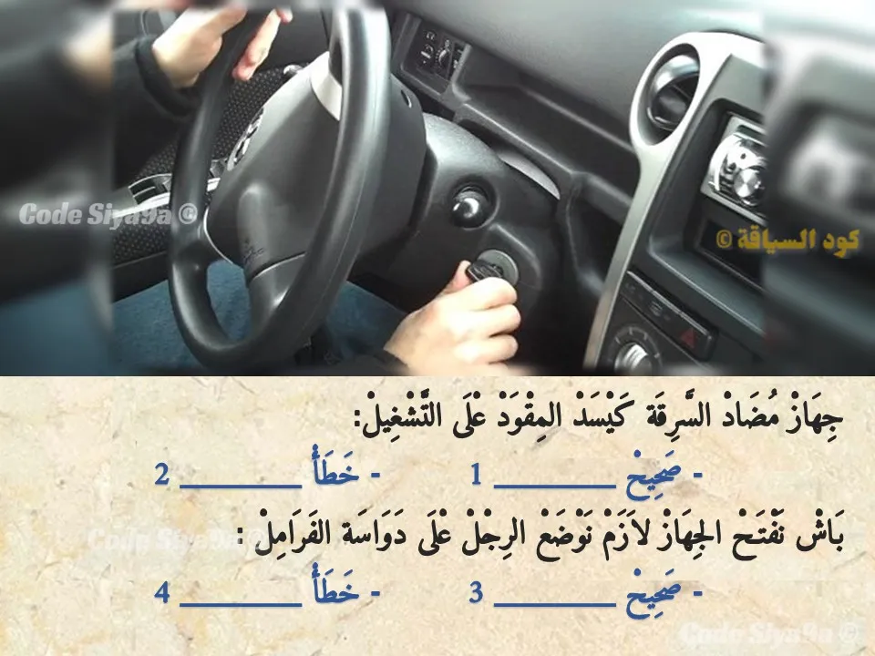
بيّن الجواب
الجواب الصحيح: 1 و 4
جهاز مودرن السرقه كيسد المقود على التشغيل. باش نفتح الجهاز لازم ندور العجله ديال القياده الى اليمين او الى اليسار بعض الشيء من بعد غادي نقوم بادخال المفتاح.
السؤال 6
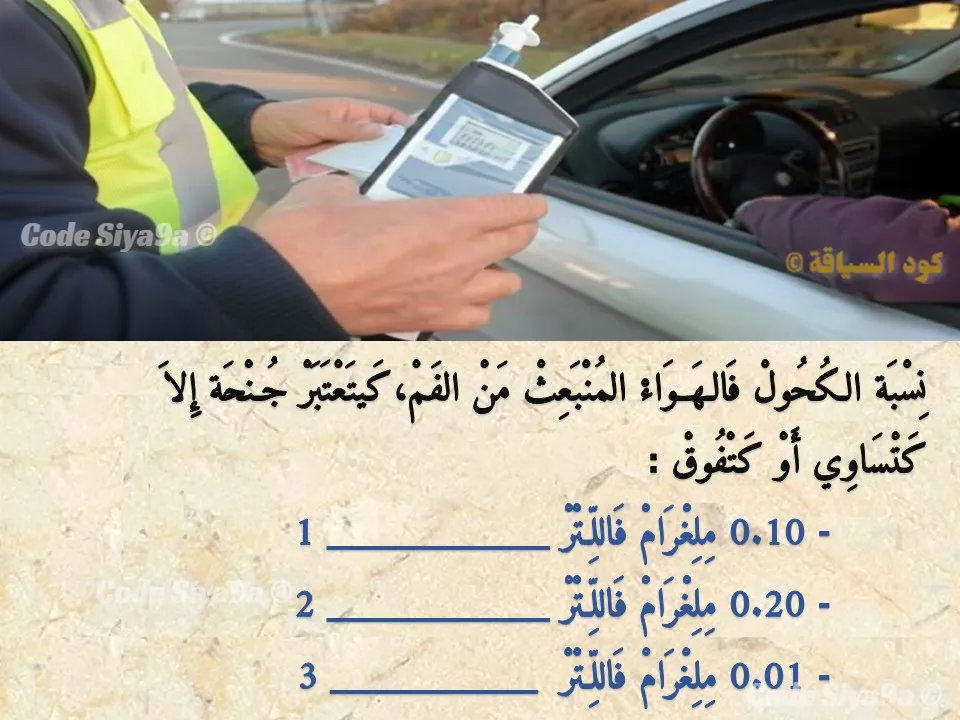
بيّن الجواب
الجواب الصحيح: 1
نسبه الكحول في الهواء المنبعث من الفم كي تعتبر جنحه الى كيساوي او كتفوق 0.10 ملي غرام في لتر يعني الجواب رقم 1 .
السؤال 7
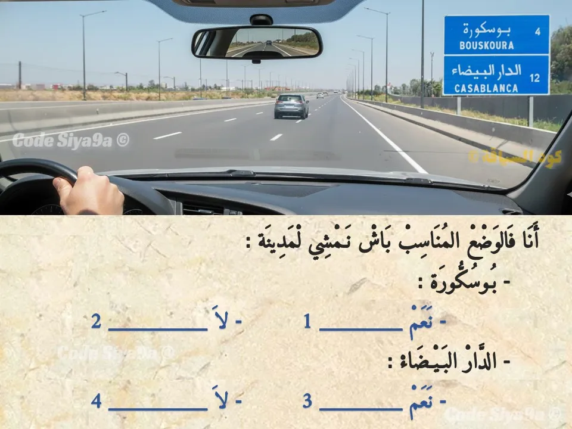
بيّن الجواب
الجواب الصحيح: 1 و 3
التشوير الطرقي كيعلم على منفذ الخروج من طريق السياره بالتالي الا بقيت في المسلك رقم 1 . يمكن لي ناخذ الخرجه ديال بوسكوره كما يمكن لي انني نكمل السير للقدام.
السؤال 8
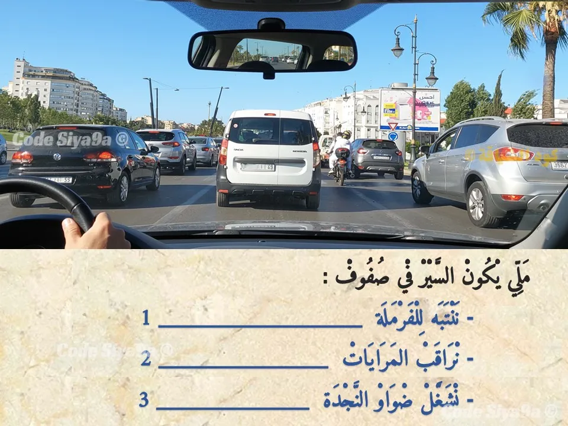
بيّن الجواب
الجواب الصحيح: 1 و 2
منين يكون صيف صفوف لازم علي ننتبه الى الفرماله السيارات اللي قدامي باش نتجنب الاصطدام بهم.
ثاني حاجه ننتبه للمريات .
السؤال 9
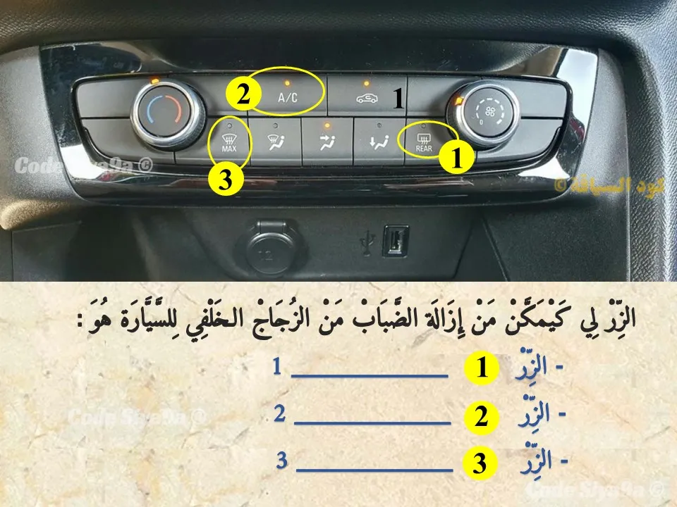
بيّن الجواب
الجواب الصحيح: 1
الزر اللي كايمكن من ازاله الضباب من الزجاج الخلفي للسياره والصدر رقم 1.
امازي الرقم 2 فهو المسؤول على تشغيل المكيف.
اما الزر رقم 3 فهو الزر اللي كايمكن من ازاله الضباب من الزجاج الامامي للسياره.
السؤال 10
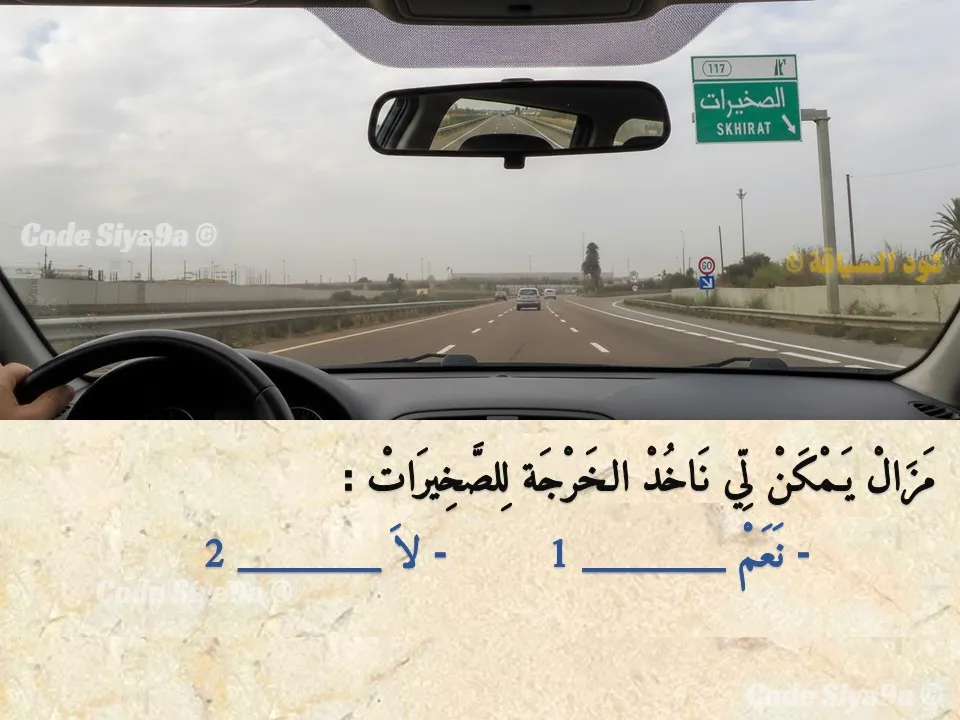
بيّن الجواب
الجواب الصحيح: 2
انا في المسلك رقم 2 ديال التجاوز. انا قريب من الخرجه بزاف ما يمكنش لي نغير المسلك في هذه الحاله علاش نخرج من الطريق السياره.
باش ناخذ الخرجه كان خاصني نحل لجهه ليمن قبل ما وصل لهذا المكان
السؤال 11
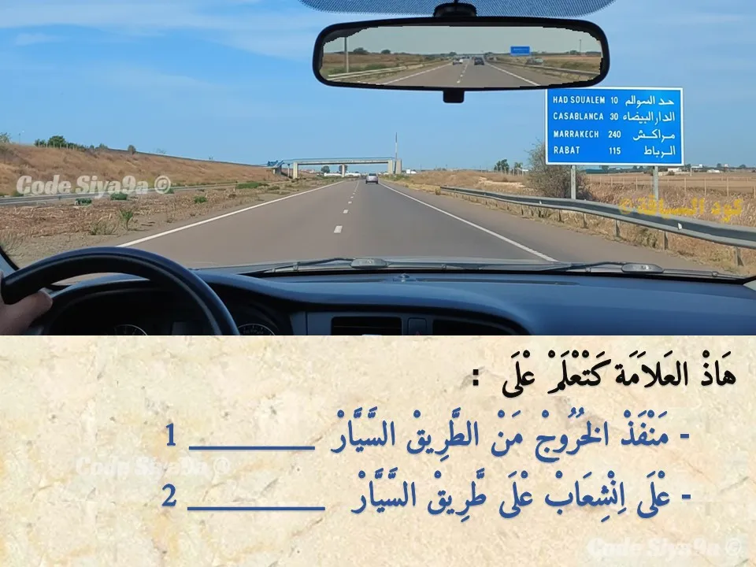
بيّن الجواب
الجواب الصحيح: 1
هذه العلامه كاتاكد الاتجاه اللي تبعث وكاتعطيني المسافه اللي مازال لي باش نوصل للمنفذ الخروج للوجهه ديالي.
مثلا منفذ الخروج الاول كيتواجد تقريبا على بعد 10 كلم.
السؤال 12
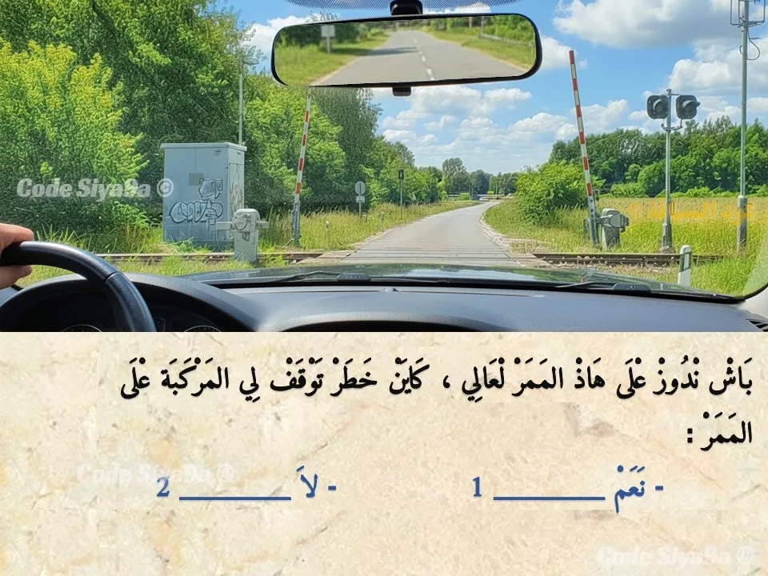
بيّن الجواب
الجواب الصحيح: 1
المرور فوق السكه الحديديه كايشكل خطر خاصه ان السكه الحديديه كاتكون في ممر عالي . اثناء المرور ممكن العربه توقف فوق سكه الحديديه.
السؤال 13
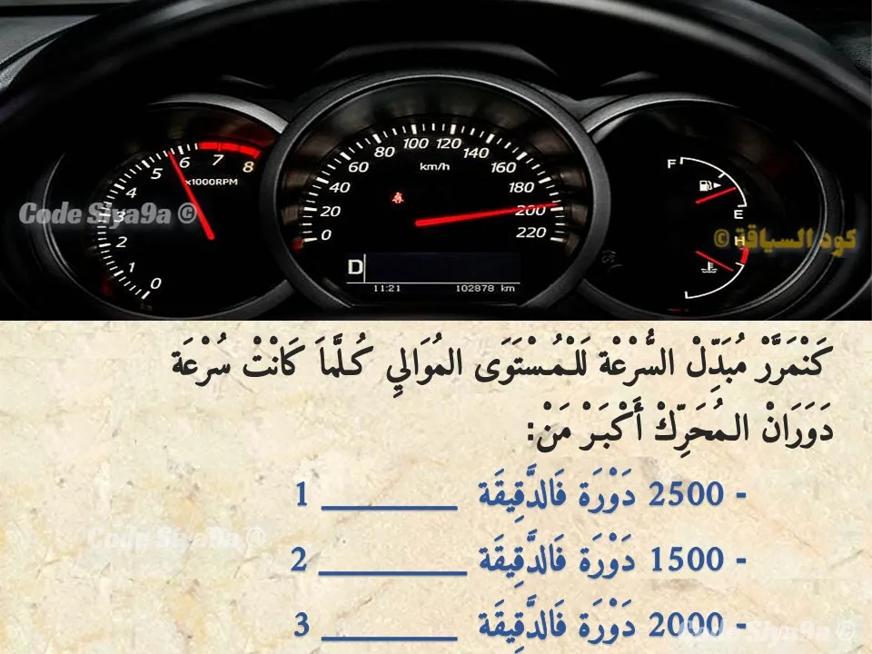
بيّن الجواب
الجواب الصحيح: 1
تغيير مستويات السرعة يكون تدريجيا إما تصاعديا أو تنازليا بالضغط على دواسة الواصل بالكامل ثم تحريك عتلة التسريع إلى المستوى الموالي أو السابق.
رفع مستوى السرعة كلما كانت سرعة دوران المحرك أكبر من 2500 دورة في الدقيقة.
السؤال 14
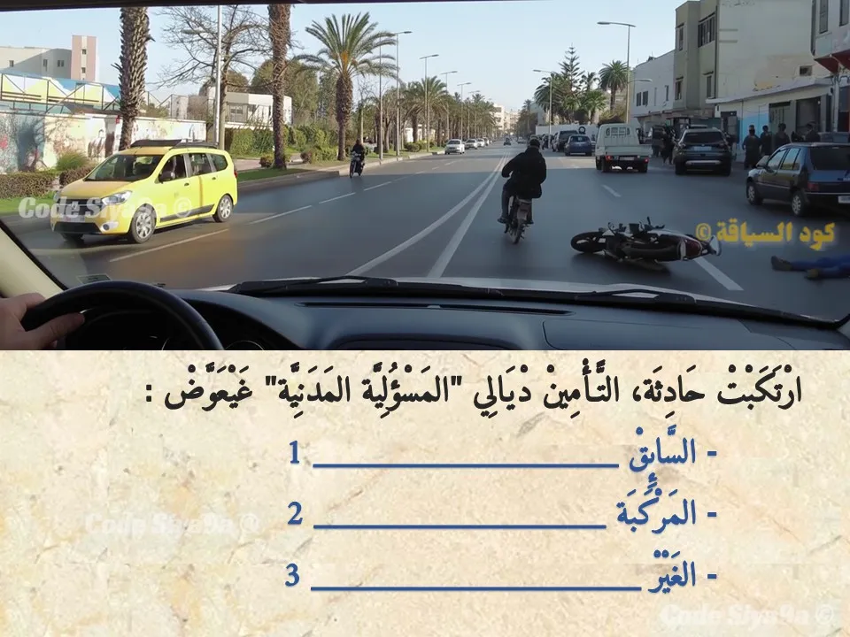
بيّن الجواب
الجواب الصحيح: 3
في حاله ترتكبت حادثه التامين ديالي بالمسؤوليه المدنيه غادي يعوض الاضرار اللي تعرضوا لها ضحايا الحديثه يعني غادي يعوض الغير لي هو ضحيه الحادثه
السؤال 15
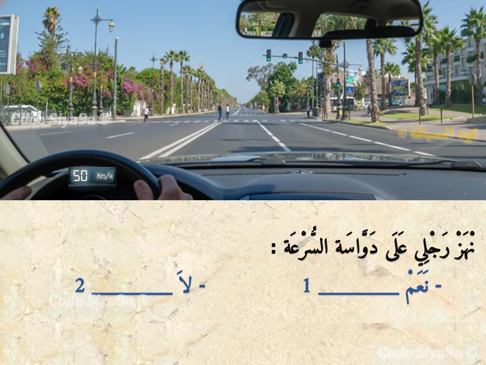
بيّن الجواب
الجواب الصحيح: 1
في هذه الحاله انا قريب من ضوء ثلاثي. عند ملتقى الطرق من الواجب علي تنقص من السرعه. بالتالي نهز رجلي على دواسه السرعه.
السؤال 16
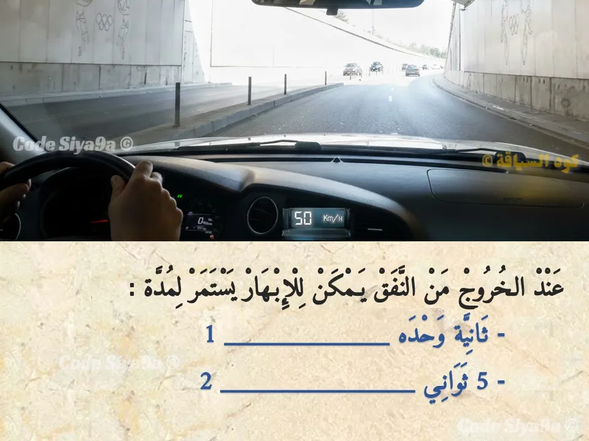
بيّن الجواب
الجواب الصحيح: 2
قواعد ذهبية في حالة الإبهار :
تعريف الإبهار: ظاهرة فقدان السائق بصره لعدة ثوان (قد تصل إلى 5 ثوان) نتيجة لتغير شدة إضاءة المكان.
💡 كيفية التعامل في حالة الإبهار :
✔ في حالة الإبهار بأضواء الطريق لمركبة قادمة من الجهة المقابلة، يجب النظر إلى الحاشية اليمنى لقارعة الطريق والإسراع بتنبيه سائق هذه المركبة بذلك بواسطة إشارة ضوئية.
✔ في حالة انعدام الرؤية نتيجة الإبهار، يجب تخفيض السرعة والوقوف إلى حين عودة الرؤية.
✔ في حالة الإبهار بأضواء المركبة التي تسير في الخلف، يجب ضبط المرآة الداخلية على الوضع الليلي مع التنبيه عن طريق القيام بإشارة ضوئية مستخدما أضواء الحصر (FEUX DE STOP) وذلك بضغط خفيف ومتتالي على دواسة الحصر
السؤال 17
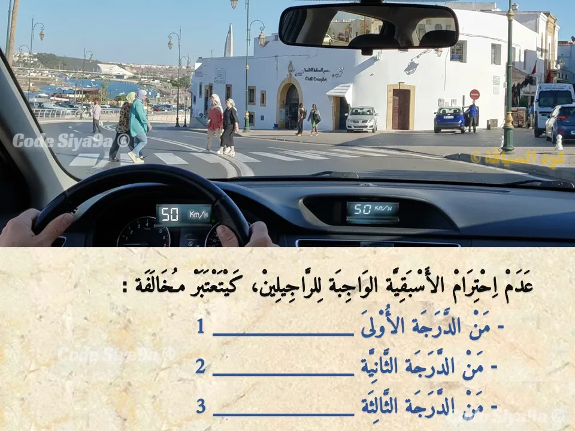
بيّن الجواب
الجواب الصحيح: 2
عدم احترام حق الاسبقيه للرجلين كتعتبر مخالفه من الدرجه الثانيه .
كتعقب غرامه من 500 حتى 1000 درهم مع سحب 0 نقطه.
السؤال 18
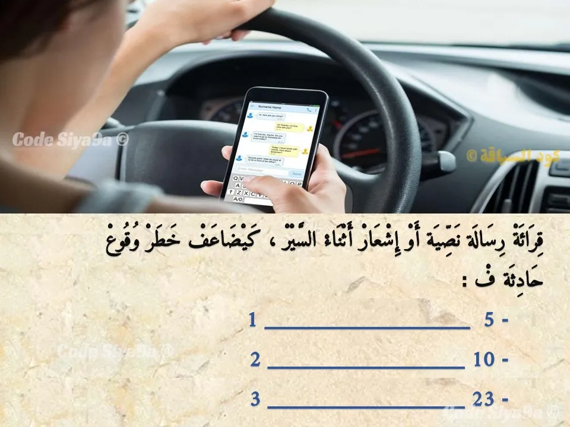
بيّن الجواب
الجواب الصحيح: 3
حسب الدراسات والاحصائيات فقراءه رساله نصيه او اشعار اثناء السائل ضعف خطر وقوع حادثه سير 23 مره.
السؤال 19
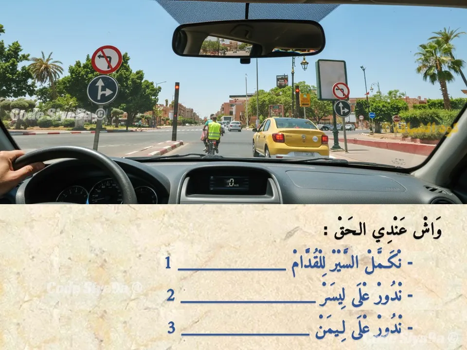
بيّن الجواب
الجواب الصحيح: 1 و 3
تشوير الطرقي الارضي كيجبرني باش نكمل للقدام.
وتشبير الطرق العمودي كيمنع لي اندور على اليسر.
في هذه الحاله انا مجبر نكمل السير للقدام.
السؤال 20
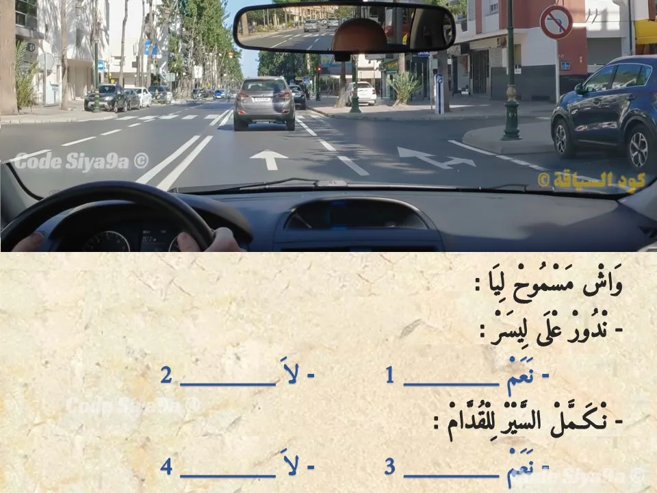
بيّن الجواب
الجواب الصحيح: 2 و 3
هذه العلامات ديال المنع والاجبار. كاتبرني باش نكمل السير القدام او ندور على اليمين.
وكاتمنع علي باش انني ندور على ليسر .
السؤال 21
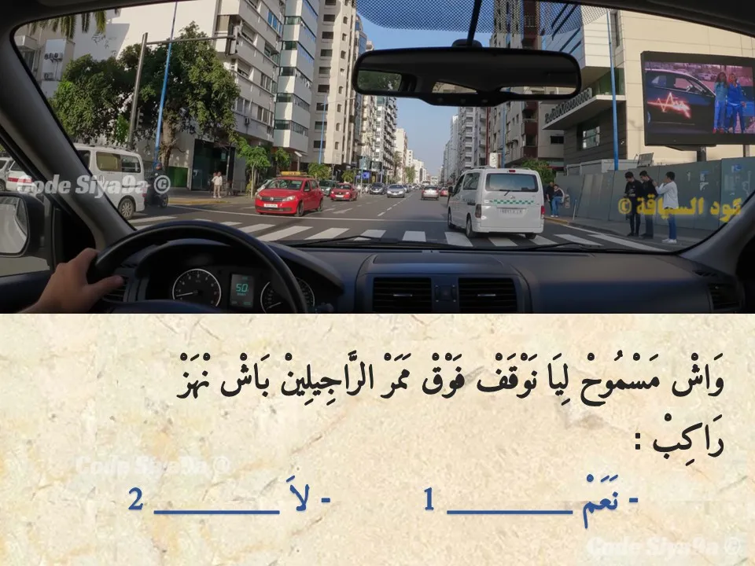
بيّن الجواب
الجواب الصحيح: 2
الوقوف او التوقوف فوق ممر الراجلين كي تعتبر مخالفه من الدرجه الثالثه كتعاقب غرامه ماليه من 300 حتى 600 الدرهم.
وبالتالي غير مسموح لي باش نوقف فوق الرجلين باش نهز راكب.
السؤال 22
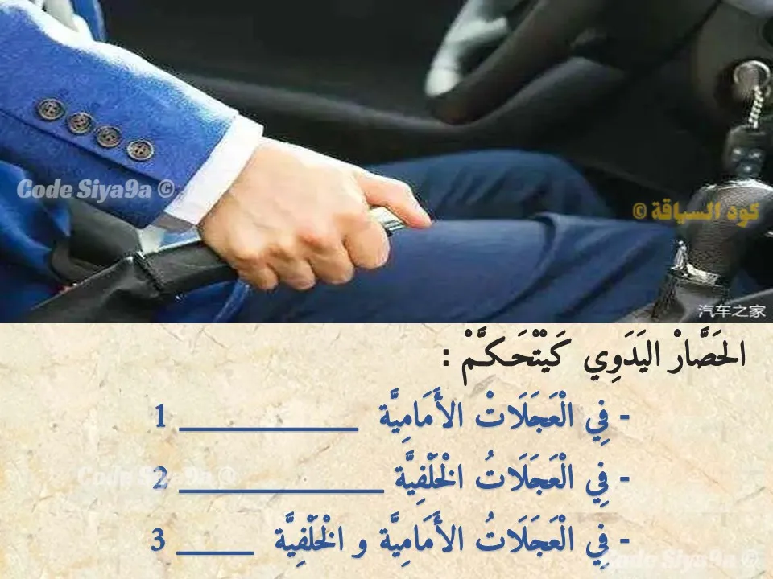
بيّن الجواب
الجواب الصحيح: 2
الحصار اليدوي كايتحكم مباشره في العجلات الخلفيه المركبه.
السؤال 23
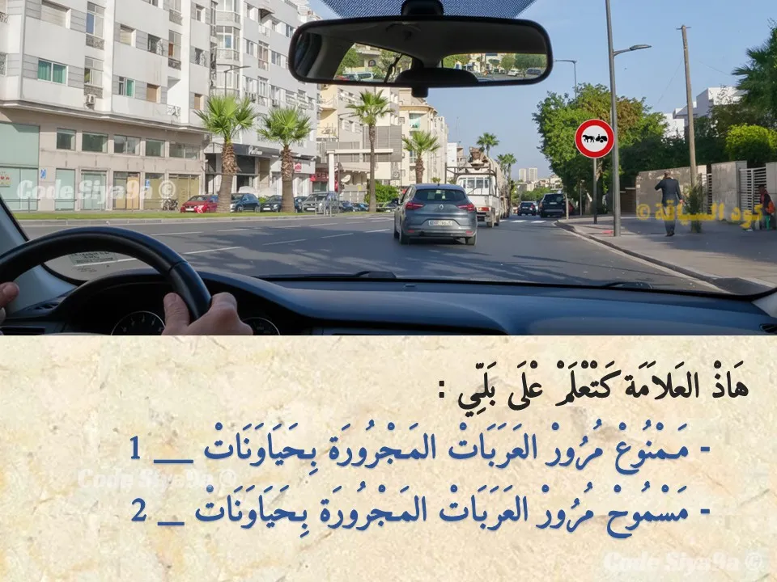
بيّن الجواب
الجواب الصحيح: 1
هذه العلامه هي علامه ديال المنع.
كتعلم باللي المرور ممنوع على العربات المجروره الحيوانات يعني الجواب الصحيح هو رقم 1
السؤال 24
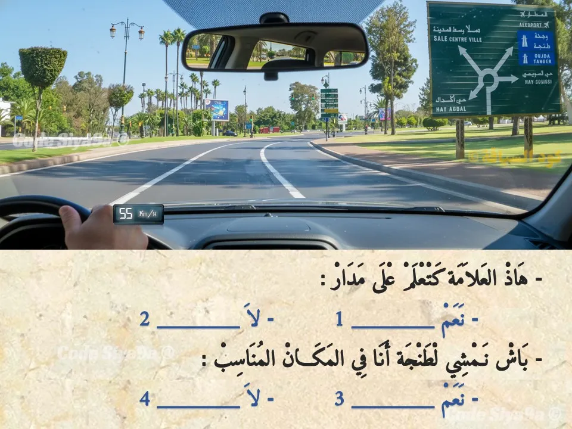
بيّن الجواب
الجواب الصحيح: 1 و 4
التشوير الطرقي كيعلم على مدار:
ـ هذا المدار فيه اربعه ديال الخرجات:
- ⚠️ في المسلك رقم واحد يمكن لي ناخذ الخرجه رقم 1 اللي عتمكني باش نمشي حي السويسي.
والخرجه رقم 2 اللي غادي تمكني باش نمشي لطريق السيار طنجه.
⚠️ اما المسلك رقم 2 كيمكنني باش ناخذ الخرجه رقم ثلاثه اللي كاتمشي لسلا وسط المدينه.
⚠️ والمسلك رقم ثلاثه باش ناخذ الخرجه رقم اربعه اللي كاتمشي الحي اكدال.
🚨 في هذه الحاله انا في المسلك رقم اثنان يعني انا ماشي في المكان المناسب باش نمشي لطنجه.
السؤال 25
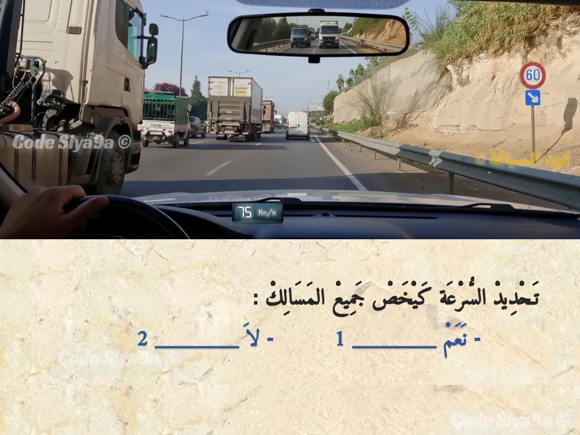
بيّن الجواب
الجواب الصحيح: 2
التشوير الطرقي تحديد السرعه تحت منها سهم نحو اليمين.
هذه المجموعه ديال العلامات كتعلم باللي تحديد السرعه كيخص فقط المسلك لي لي غادي يتزاد على ليمن .
في هذه الحاله انا كانسير في طريق سريع وطريق سريع كاتكون السرعه محدوده في 80 او 100 كلم في الساعه. وباش نخرج من الطريق السريع كيكون المخرج فيه السرعه محدوده 60 يعني غادي ندخل للتجمع سكني.
السؤال 26
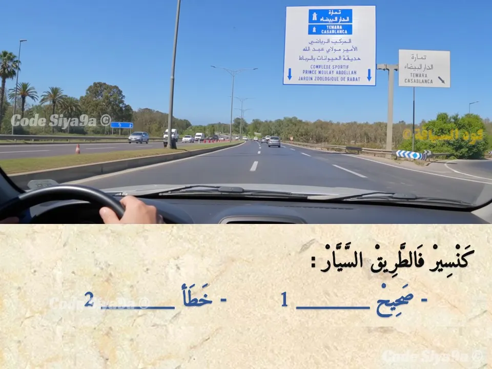
بيّن الجواب
الجواب الصحيح: 2
التشوير الطرقي كيعلم باللي انا كانمشي في طريق السريع.
الطريق السريع كيكون مشابه لطريق السيار فقط الفرق بيناتهم هو ان الطريق السريع تصوير الطرق دياله كيكون لوحات بالابيض على عكس الطريق السيار اللي كيكون تشوير الطرقي دياله بالازرق.
بالاضافه الوجود الرصيف فاصل بين المسالك.
السؤال 27
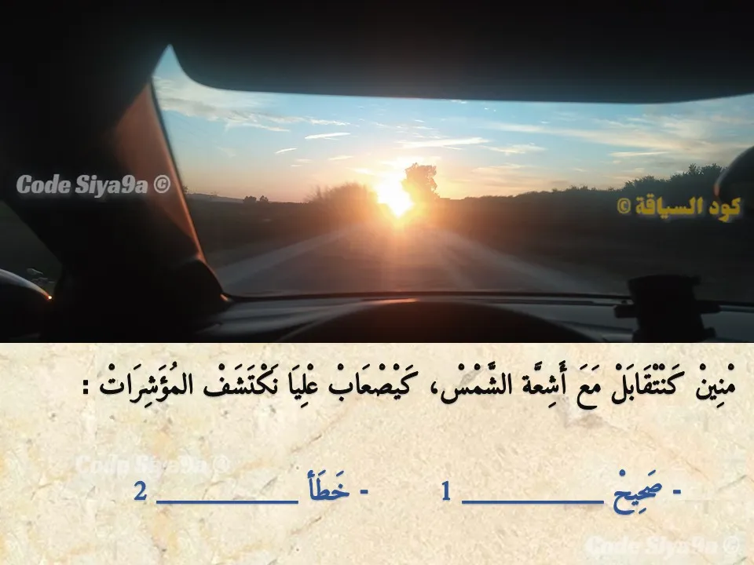
بيّن الجواب
الجواب الصحيح: 1
منين كانتقابل مع اشعه الشمس كايصعب علي نشوف المؤشرات بالخصوص الى تصادفت مع شروق الشمس او غروب الشمس. في هذه الحاله من الواجب علي ننقص من السرعه ونلتزم اقصى اليمين ونزيد مسافه الامان.
السؤال 28
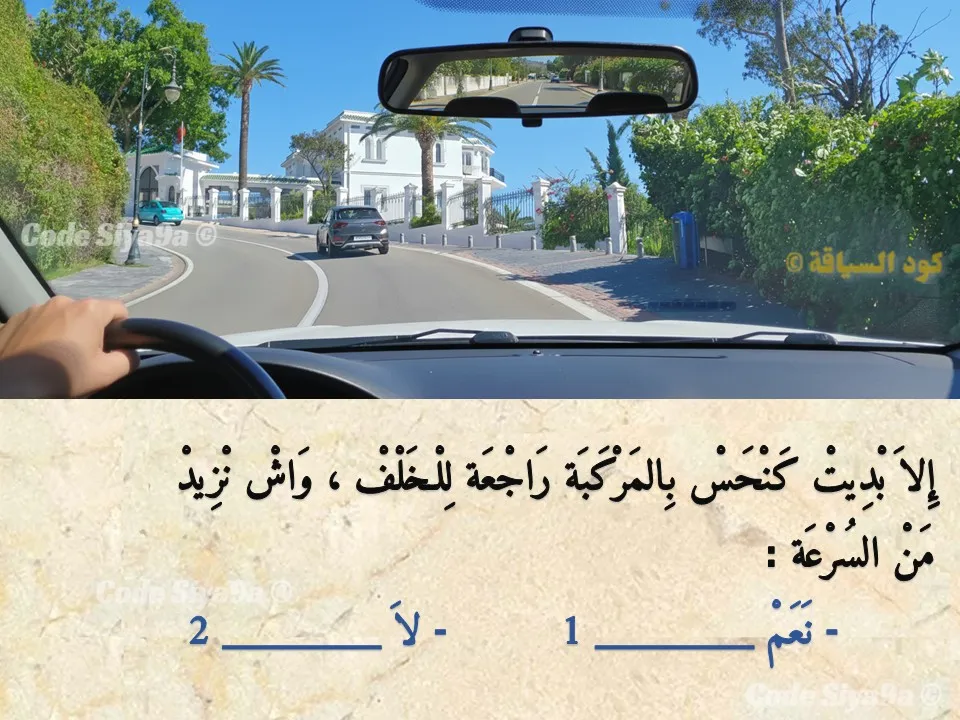
بيّن الجواب
الجواب الصحيح: 1
في الطلعه الا بديت كانحس بالمركبه راجعه للخلف خاصني نزيد السرعه باش نتابع السير القدام
السؤال 29
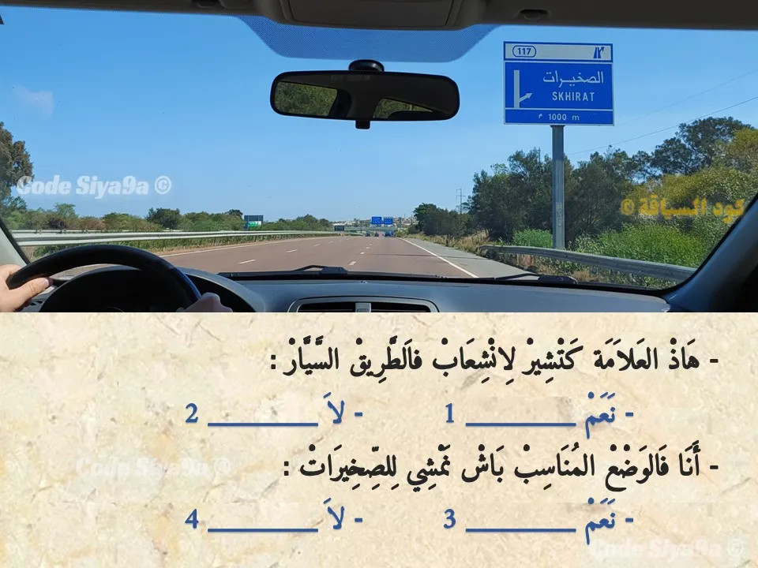
بيّن الجواب
الجواب الصحيح: 2 و 3
هذه العلامه كتشير المنفذ الخروج من طريق السياره.
انا في المسلك رقم واحد ديال السير العادي وبالتالي باش ناخذ منفذ الخروج جاي انا في الوضع المناسب.
السؤال 30
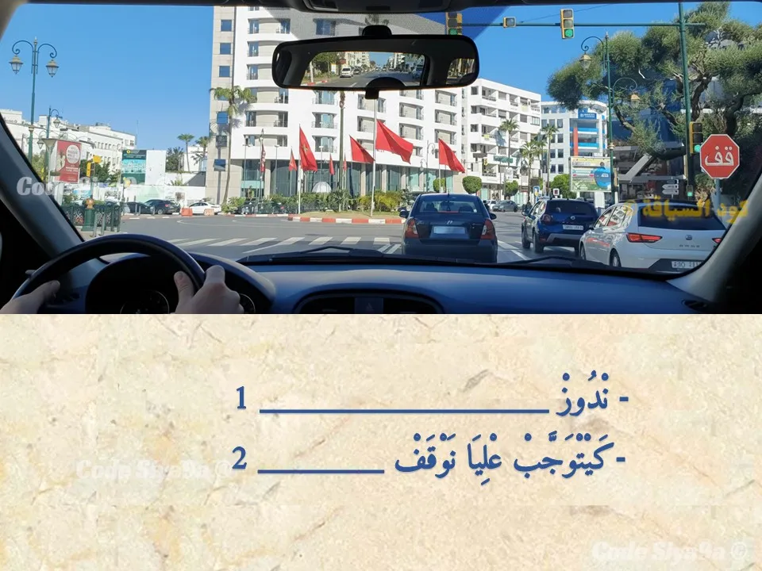
بيّن الجواب
الجواب الصحيح: 1
التشوير الطرقي كيظم :
✅🚦 ضوء ثلاثي الالوان . الضوء اخضر شعل .
⚠️ في نفس الوقت عندي علامه قف.
منين كيتجمع الضوء الثلاثيي الالوان مع علامه قف في هذه الحاله كنطبقوا تصوير الطرقي ديال الضوء الثلاثي.
في هذه الحاله الضوء اخضر شاعل وبالتالي ندوز.
السؤال 31
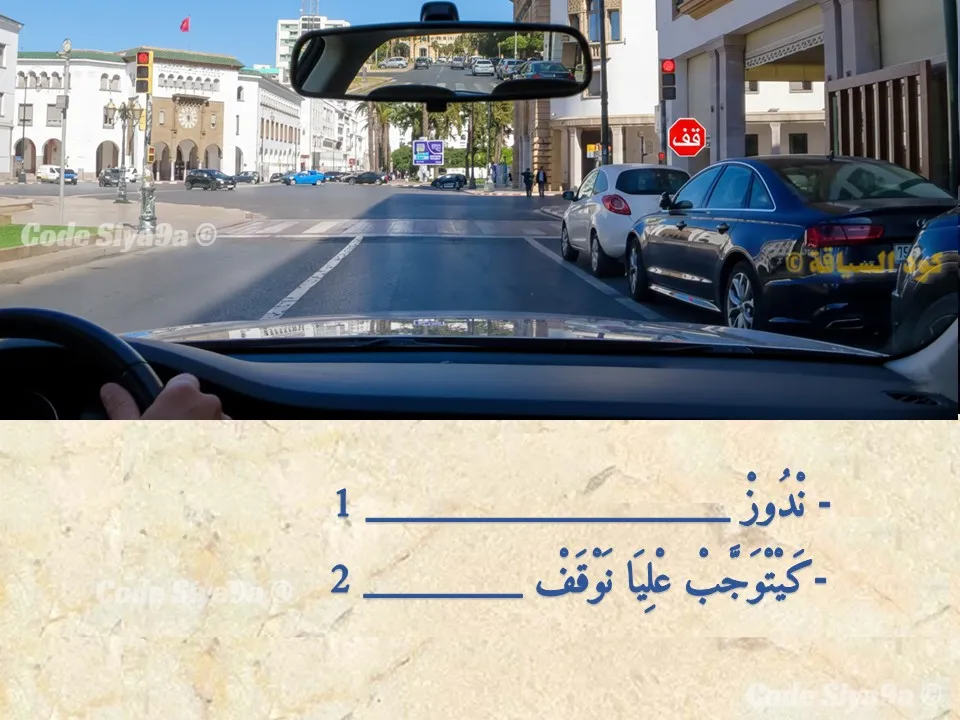
بيّن الجواب
الجواب الصحيح: 2
التشوير الطرقي كيظم :
✅🚦 ضوء ثلاثي الالوان . الضوء احمر شعل .
⚠️ في نفس الوقت عندي علامه قف.
منين كيتجمع الضوء الثلاثيي الالوان مع علامه قف في هذه الحاله كنطبقوا تصوير الطرقي ديال الضوء الثلاثي.
في هذه الحاله الضوء احمر شاعل وبالتالي كيتوجب عليا نوقف .
السؤال 32
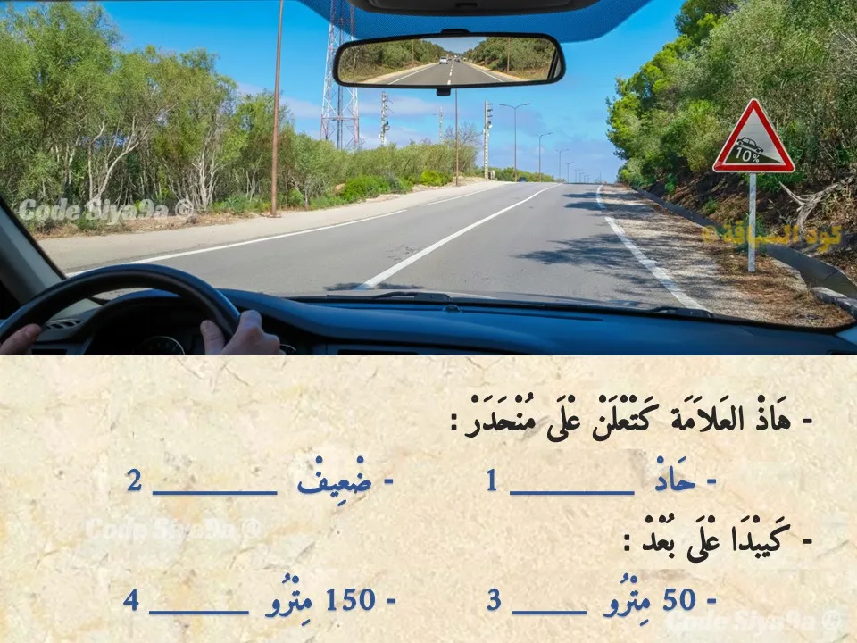
بيّن الجواب
الجواب الصحيح: 1 و 4
هذه العلامه كتعلم على خطر منحدر على بعد 150 متر.
✅كتعلن هذه العلامه على خطر منحدر بنسبه 10% يعني انه فاش غانقطع ما يعادل مسافه 100 متر مستقيمه تانكون هبطت ب 10 متر.
من الواجب علي نخفض من مستويات السرعه، ونمسك المقود جيدا نقوم بالحصر بصفه متقطعه باش نتحكم جيدا في المركبه ديالي ونحترم مسافه الامان.
السؤال 33
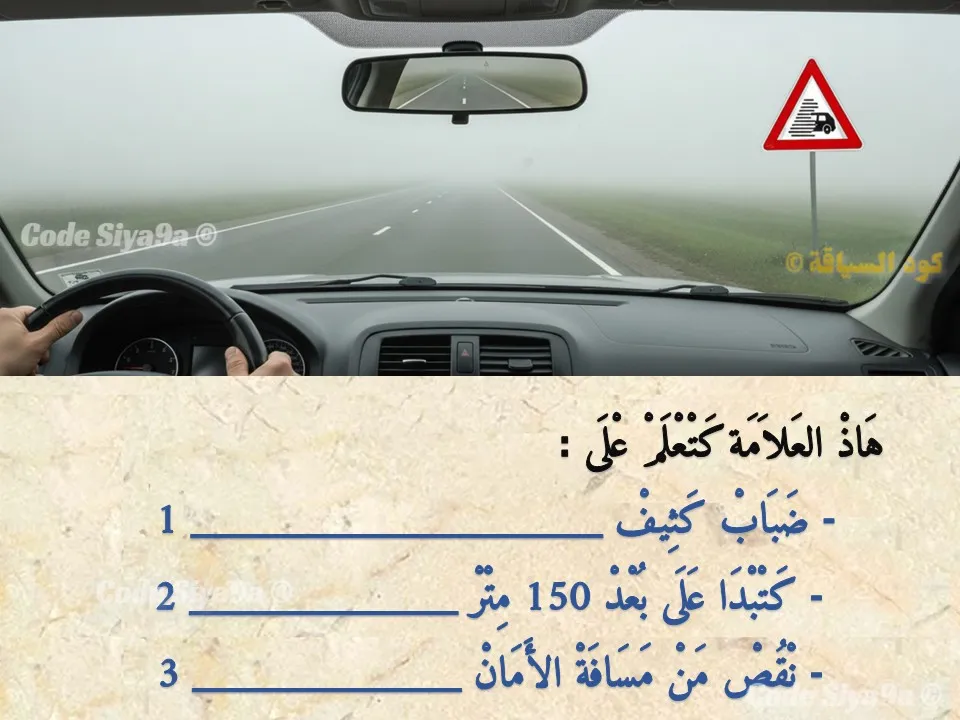
بيّن الجواب
الجواب الصحيح: 1 و 2
هذه العلامه ديال الخطر كتعلم على خطر دابا بكتيف من الواجب علي ننقص من السرعه ونلتزم اليمين ديالي.
هذا العالم ها كاتعلم على خطر على بعد 150 متر.
السؤال 34
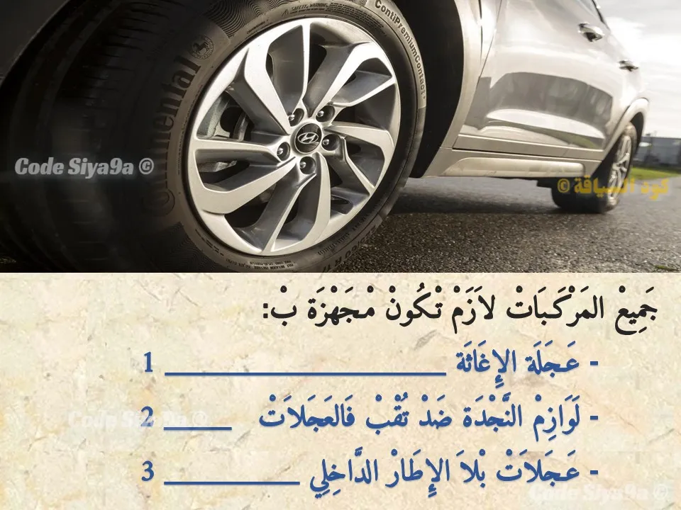
بيّن الجواب
الجواب الصحيح: 1 و 3
نعم، جميع المركبات يجب أن تكون مجهزة بعجلة إغاثة أو إطار احتياطي.
- هذا ضروري لضمان السلامة على الطريق في حال حدوث أي عطل في الإطار أثناء القيادة.
السؤال 35
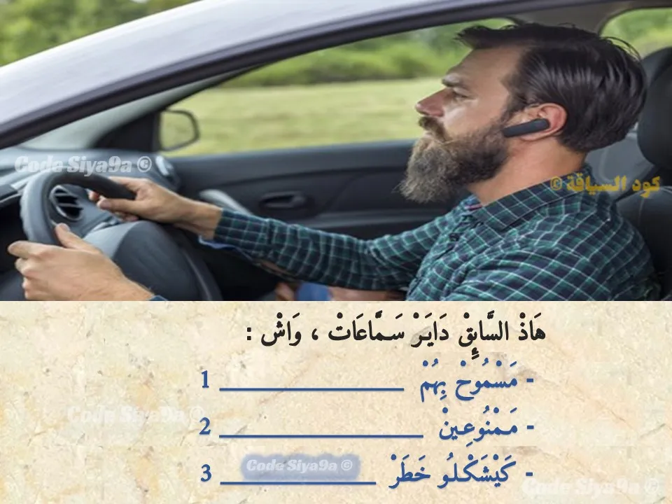
بيّن الجواب
الجواب الصحيح: 1 و 3
استعمال ديال سماعات اثناء السير مسموح به. لانه كيعوض حمل الهاتف باليد الشيء اللي كيادي التشتيت والتركيز ديال السائق.
السماعات على الاذن ممكن انها تحجب الاصوات الخارجيه وبالتالي كاتشكل خطر.
السؤال 36
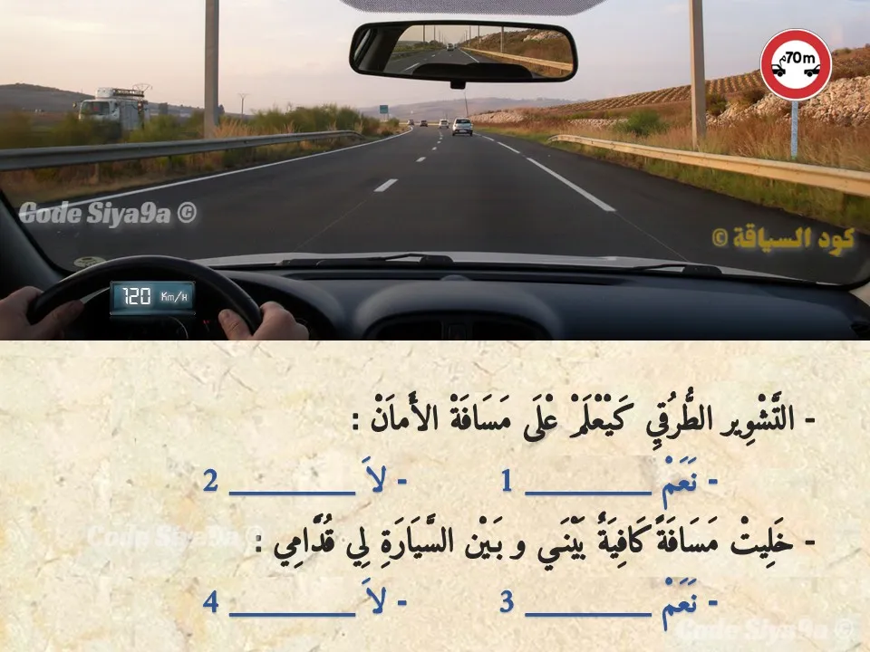
بيّن الجواب
الجواب الصحيح: 1 و 3
هذه العلامات ديال المنع كاتمنع السير مسافه امان اقل من 70 متر بين المركبات .
هذه الحاله انطلاقا من الخطوط الجانبيه كيتبين على انني خليت مسافه امان كافيه بيني وبين المركبه اللي قدامي
السؤال 37
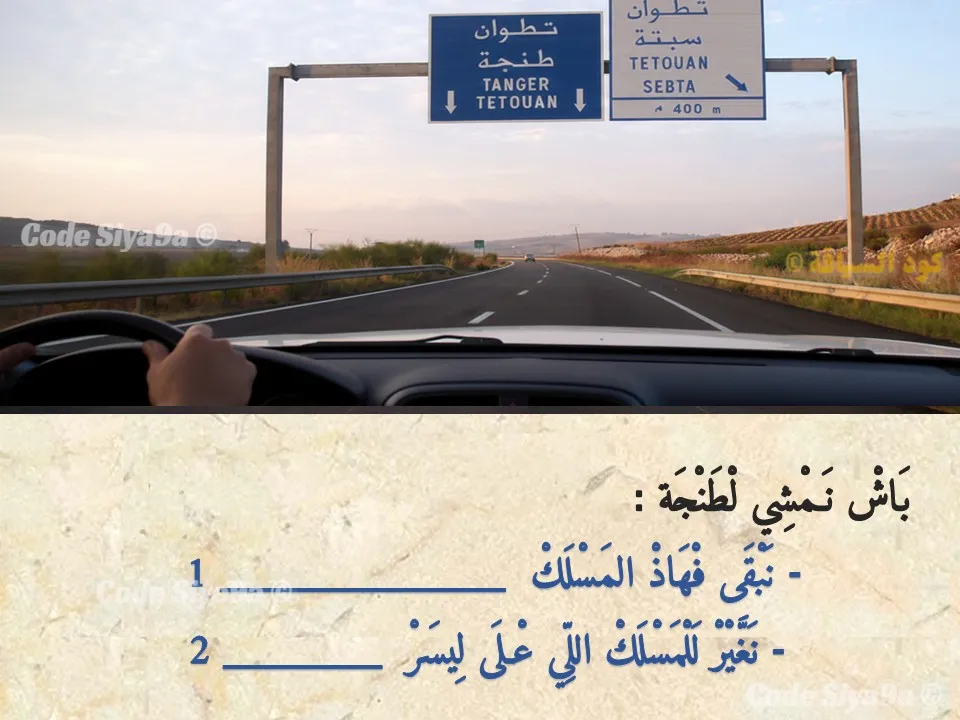
بيّن الجواب
الجواب الصحيح: 1
تصوير الطرقي كيعلم على منفذ الخروج من طريق السيار على بعد 400 متر.
هذه حاله الى بقيت في هذا المسلك غادي نكمل السير طريق السيار تي يمكن لي نمشي لتطوان وطنجه.
اما المسلك اللي غادي يخرج للمنفل فغادي يتزاد من جهه اليمن وغادي يصبحوا ثلاثه ديال المسالك.
يعني الا بقيت هنا راه غادي نكمل في الطريق السيار.
السؤال 38
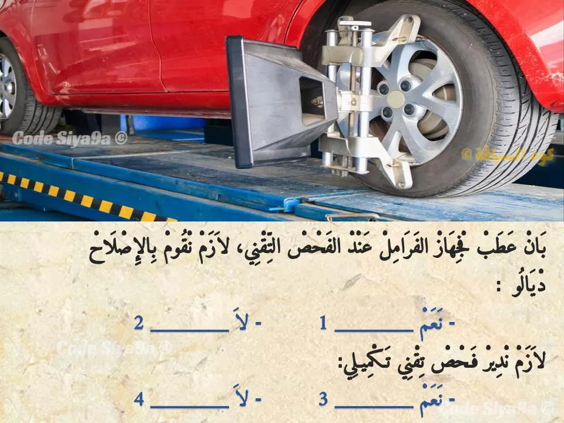
بيّن الجواب
الجواب الصحيح: 1 و 3
اثناء الفحص التقني الى بانشي عطب فمن الواجب علي انني نصلحه ونعاود نقوم بفحص التكميلي.
السؤال 39
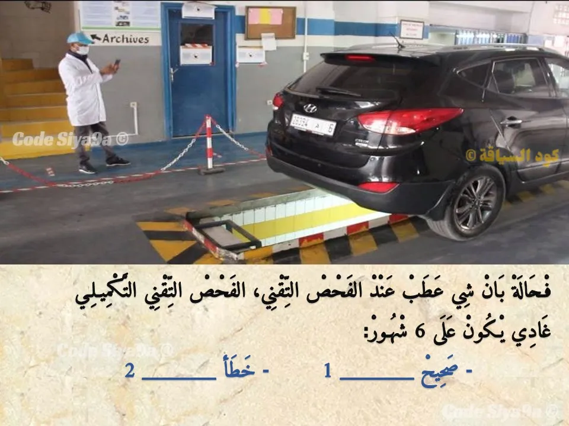
بيّن الجواب
الجواب الصحيح: 2
عند كل معاينة لعيب أو عدة عيوب تتطلب القيام بمراقبة تكميلية، يتم منح مالك المركبة مهلة شهر كأجل أقصى ابتداء من تاريخ المراقبة الأولية قصد إجراء مراقبة تكميلية للمراقبة الأولية.
السؤال 40
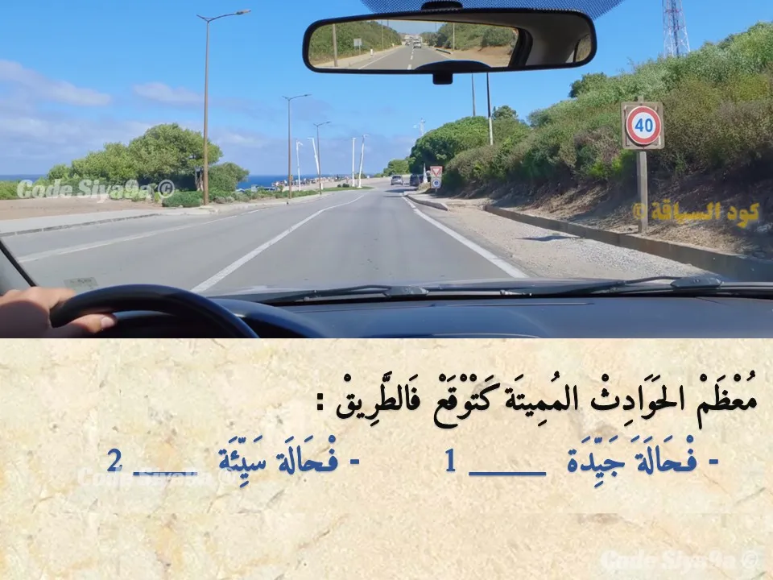
بيّن الجواب
الجواب الصحيح: 1
معظم الحوادث كايكون عندها علاقه مباشره بالسائق والسلوك دياله.
السائق اللي كايكون منتبه الطريق جيده او في طريق سيئه فراه كيتجنب الحوادث المميته.
على عكس السائق اللي كايكون متهور فراه كيكون معرض الحديثه في اي نوع ديال الطريق
بصفه عامه الطريق الى كانت بحاله جيده السائق ممكن يكون متهور وبالتالي يتعرض لحادثة .